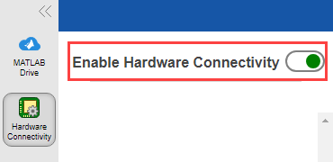

Troubleshooting MATLAB Connector Issues in Windows
This section explains how to solve MATLAB Connector issues that you might encounter in Windows.
Troubleshoot Unable to Connect or Connection Lost Errors
Issue
When MATLAB® Connector starts or when MATLAB Connector is running, if there is a problem with the connection, then one of following message appears:
Unable to connect to MATLAB Connector on this machine.
Connectivity with MATLAB Connector lost.
Possible Solutions
Complete these preliminary checks to ensure basic functionality.
Ensure that MATLAB Connector is Running
Check from taskbar.
View the taskbar and check if the MATLAB Connector icon is visible. If the icon is available, the application is running.
Check system tray for background applications.
Click on the bottom right-side of the Windows® taskbar to open the system tray. If MATLAB Connector is running in the background, its icon will be visible here. If Windows displays an error, toggle the Hardware Connectivity switch between the on and off states.
Check internet connection
Check Network Icon.
Check the network icon on the bottom right-side of Windows taskbar. A globe icon indicates no internet access, while signal bars or the Wi-Fi icon indicate that the internet connection is working.
Restart MATLAB Connector
Restart MATLAB Connector.
In the MATLAB Connector™ window, switch off the Hardware Connectivity toggle switch and switch it on again.
If the issue persists, click the Exit button in the bottom-left corner of the MATLAB Connector window. You can also right-click the MATLAB Connector icon in the Windows system notification area and select Exit.
In the Start menu, select MATLAB Connector and ensure that Enable Hardware Connectivity toggle switch is on.

See Also
Install MATLAB Connector for Hardware Connectivity | MATLAB Connector Preferences and Account Information | Troubleshooting MATLAB Connector Issues in Mac | Troubleshooting MATLAB Connector Issues in Linux